CSS es el lenguaje que usamos para diseñar un documento HTML. CSS describe cómo se deben mostrar los elementos HTML. Este tutorial le enseñará CSS de básico a avanzado.
Un conjunto de reglas CSS consta de un selector y un bloque de declaración:
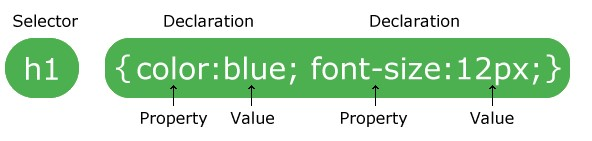
El selector apunta al elemento HTML al que desea aplicar estilo. El bloque de declaración contiene una o más declaraciones separadas por punto y coma. Cada declaración incluye un nombre de propiedad CSS y un valor, separados por dos puntos. Varias declaraciones CSS se separan con punto y coma y los bloques de declaración están rodeados por llaves.
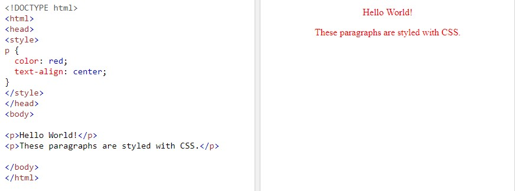
Para más información, haga click aquí.El selector de elementos selecciona elementos HTML en función del nombre del elemento.
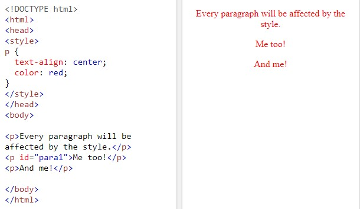
El selector de clases selecciona elementos HTML con un atributo de clase específico. Para seleccionar elementos con una clase específica, escriba un punto (.), Seguido del nombre de la clase.
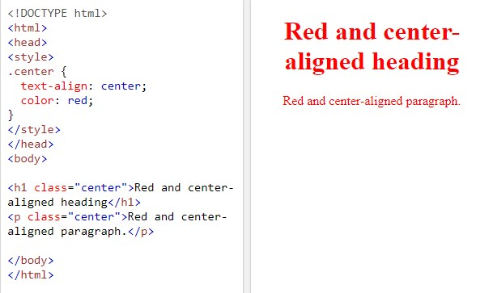También puede especificar que solo los elementos HTML específicos se vean afectados por una clase.
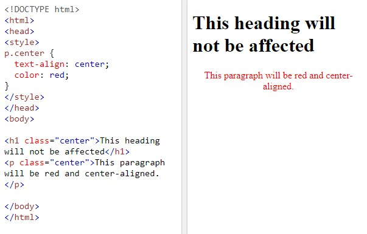
Los elementos HTML también pueden hacer referencia a más de una clase.
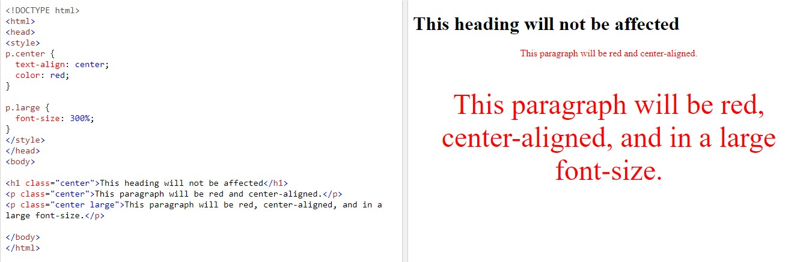
El selector universal (*) selecciona todos los elementos HTML de la página.

El selector de agrupación selecciona todos los elementos HTML con las mismas definiciones de estilo.
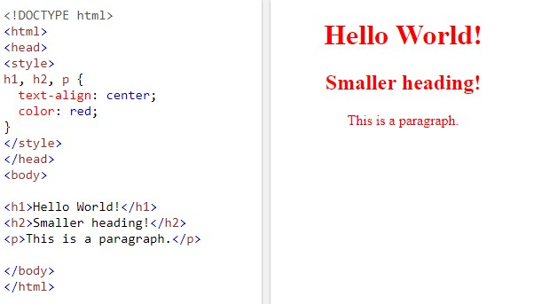
Para más información, haga click aquí.Los comentarios se utilizan para explicar el código y pueden ayudar cuando edite el código fuente en una fecha posterior.
Los navegadores ignoran los comentarios.
Se coloca un comentario CSS dentro del elemento <style> y empiezan con /* finalizan con */. Puede agregar comentarios donde quiera en el código.
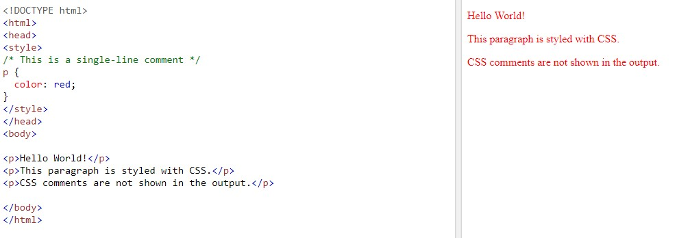
La propiedad background-color especifica el color de fondo de un elemento.
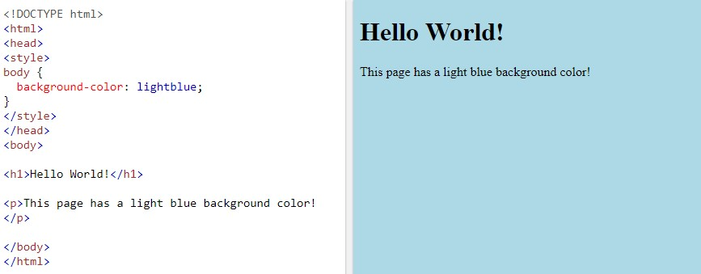Puede establecer el color de fondo de cualquier elemento HTML:
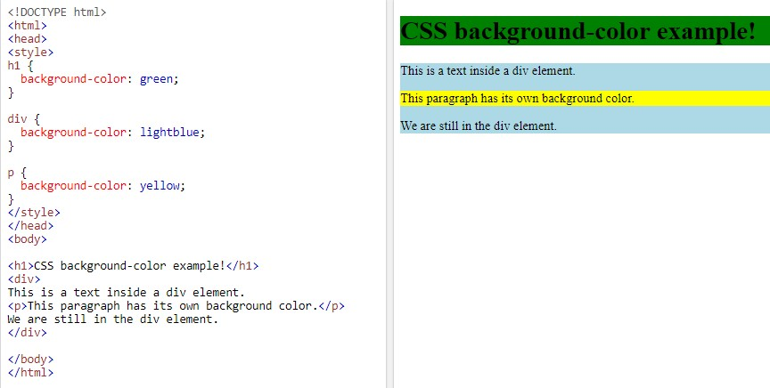La propiedad border-style especifica qué tipo de borde mostrar. Se permiten los siguientes valores:
La propiedad de estilo de borde puede tener de uno a cuatro valores (para el borde superior, el borde derecho, el borde inferior y el borde izquierdo).
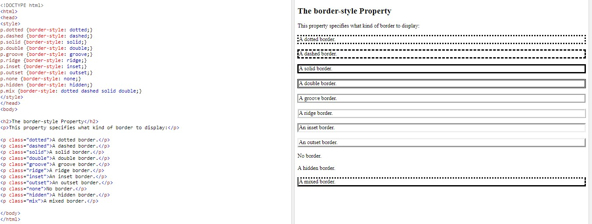 Para más información, haga click aquí.